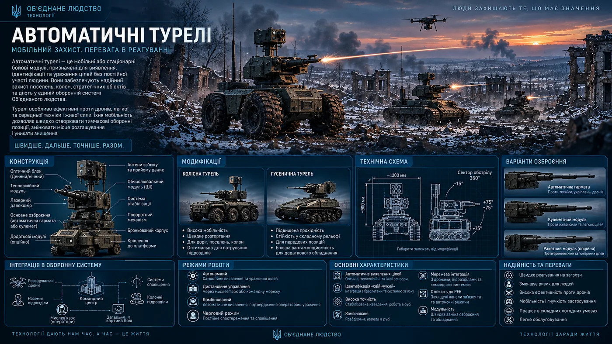

A mass-produced automated defensive system designed to reduce the need to keep people permanently stationed at dangerous positions.
The turrets are not presented in the books as a newly invented wonder weapon. Automated turrets had existed for a long time. What changed was that Zero Plan technology made rapid mass production possible, while the thought-link removed the main limitation of conventional remote-controlled systems.
Canonical role: a turret takes over observation and fire support at a dangerous position, but remains part of a defensive network, working with an operator, drones, sensors and other systems.
How the system emerged
The problem
Under sustained enemy pressure, defence forces had to commit personnel not only to direct combat. They also needed observers, approach security, sentries at firing points and reserve positions. A person might have to wait for hours under the threat of drones.
The solution
Officers proposed using automated turrets equipped with cameras, a thermal imager, a machine gun, actuators and remote control. The operator could remain under cover while the machine worked where a person's continuous presence was dangerous.
Why now?
The Zero Plan provided ready-made components and production lines. There was no need to reinvent the turret: the existing principle could be adapted and moved directly into serial production.
Thought-link
A conventional radio channel can be jammed. Thought-link communication does not have the same physical dependence on terrain, distance and the radio spectrum. The operator can remain far behind the front and see what the machine sees.
Technical layout
The canonical system consists of a sensor unit, a combat module, a powered rotating platform and a control system. The sensor unit includes cameras and a thermal imager; the combat module carries a machine gun or another compatible configuration. The operator controls the turret remotely, using thought-link and the wider network.
Exact physical dimensions and performance figures are not established in the books and are therefore not presented as fixed specifications.

Technical overview of the automated turret system, its main components, configurations and integration into the United Humanity defensive network.
Key characteristics
TypeAutomated defensive turret.
Core equipmentCameras, thermal imager, machine gun, actuators and remote-control system.
ControlAn operator under cover; the updated system uses thought-link.
ProductionSerial production using Zero Plan components and manufacturing lines; the initial requirement was hundreds of machines.
CommunicationsThought-link reduces dependence on conventional radio channels and intermediate relays.
RoleDefending positions, settlements and facilities where a person's permanent presence would create unnecessary risk.
How thought-link changes the turret
Earlier automated turrets depended on conventional communications. If the enemy jammed the radio spectrum, the operator could lose control of the machine. In the updated system, the operator can remain far behind the front while receiving the same picture seen by the turret.
This matters beyond command and control. An operator no longer has to be physically close to every position. The system can be deployed where keeping a person under constant observation or fire would be an unjustifiable risk.
Integration into the defensive network
Turret + operator
The machine works at a dangerous position while the operator controls it from a safer location.
Turret + drones
Drones and turrets can form parts of one observation and defence system, sharing information across a common network.
Turret + sensors
Cameras and thermal imagers provide information about the situation. Automated defence can use these data to detect and track targets.
Friendly-force identification
A deployed automated defence system must distinguish friendly forces from the enemy. Thought-link and the associated bracelets become part of that identification process.
Deployment options
Permanent positions
Turrets are installed where a dangerous approach must be monitored continuously without keeping a soldier on duty there.
Reserve positions
Some machines can be deployed at additional positions and used as the situation changes.
Settlements and facilities
The system is not intended only for the front line. It can protect approaches, important facilities and areas where the burden on personnel needs to be reduced.
Mass deployment
The key advantage of Zero Plan technology was the ability to move from a handful of experimental machines to serial production.
“We do not need to invent the principle itself. We can take what already works, adapt it to our conditions and start producing it by the hundreds.”
Canon of Kharakternyky
Automated turrets are not robotic soldiers or a separate class of humanoid machines. They are defensive weapon systems designed for a specific task: observe, transmit information, traverse and fire under an operator's control.
Their technological advantage during the events of Book Two comes from combining the established turret concept, the manufacturing capacity of the Zero Plan, artificial intelligence and thought-link.
The system is primarily intended to reduce the number of people who must remain at dangerous positions and to connect those positions to a unified defensive network.